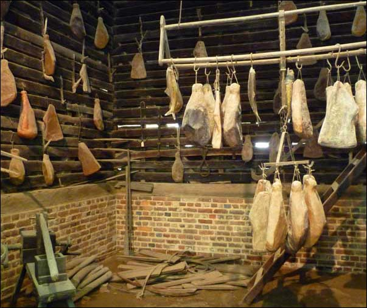

Preserving
Most of the food the Washingtons ate came from farming but, those foods only grew during the warm months. What about the other months? To make sure they had food all year round, the Washingtons had to preserve and store the food they didn't eat.
But there were no refrigerators! How did they keep food safe to eat? The Washingtons had three main ways to preserve food: drying/salting, pickling, and sugaring.
Some fruits, like strawberries, were boiled in sugar and stored in jars. This would give you yummy strawberries even in the winter! Tough vegetables, like potatoes, were packed in a cold basement and protected from moisture by straw or sand.
Preserving meat was the hardest job. Washington had a smokehouse where meat would soak in saltwater for 6 weeks and then hang over a smoky fire for another 2 weeks. This made the meat like jerky and would keep it safe to eat! The smoked meat could be stored in the smokehouse for up to two years before the Washingtons ate it.←→